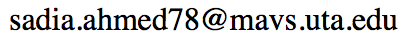

Sadia Ahmed
Graduate Research Assistant
Dept. of Computer Science and Engineering
The University of Texas at Arlington

Hello! Thank you for visiting my web page.
I am a PhD student, interested in the field of Big Data Exploration, including databases, data analytics and mining, information retrieval, and algorithms. My supervising professor is
Dr. Gautam Das. Before joining
DBXLab I have worked under
Dr. Matthew Wright on Usable Security and Privacy.
Publications
-
Sadia Ahmed, Sona Hasani, Mary Koone, Saravanan Thirumuruganathan, Montserrat Diaz-Abad, Ron Mitchell, Amal Isaiah, Gautam Das: An Empirical Study of Questionnaires for the Diagnosis of Pediatric Obstructive Sleep Apnea. Contributed paper on the IEEE Engineering in Medicine and Biology Society (EMBC), 2018.
-
Sovantharith Seng, Sadia Ahmed, Mahdi Nasrullah Al-Ameen and Matthew Wright: An Insight into the Authentication Performance and Security Perception of Older Users. Proceedings of workshop on Usable Security (USEC), Co-located with The Network and Distributed System Security (NDSS) Symposium, 2017.
Posters